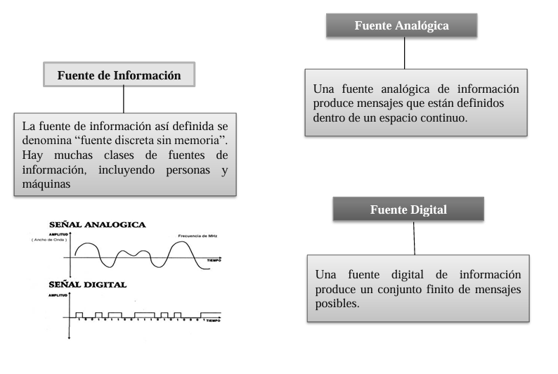
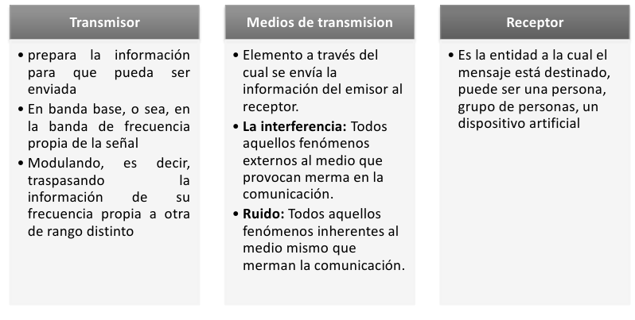
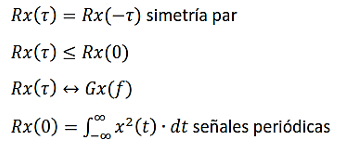

Para transmitir un mensaje se requiere un sistema de comunicación que sea transferida, a través del espacio y el tiempo, desde un punto llamado fuente hasta otro punto de destino.
 Archivos y Software
Archivos y Software
CAPITULO 1: INTRODUCCIÓN A LOS SISTEMAS DE COMUNICACIÓN
INTRODUCCIÓN A LOS SISTEMAS DE COMUNICACIÓN
Mensajes
- Secuencia de símbolos
- Intensidad de la luz
- Colores de una imagen televisada
- Presión acústica de la voz


Es aquella que genera mensajes que varían con el tiempo, es decir, mensajes definidos de manera continua.
Ejemplos:Señales analógicas como: la voz humana.
Es aquella que produce una serie finita de posibles mensajes.
Ejemplos: Un modem, una computadora.
TRANSDUCTOR DE ENTRADA
El mensaje generado por la fuente no es eléctrico, por lo que se requiere un transductor o codificador para convertirlo en una señal eléctrica. Esta señal es una magnitud variable en el tiempo, como voltajes o corrientes, que es compatible con el sistema de transmisión empleado. El codificador transforma señales no codificadas en un conjunto organizado de señales, formando un código.
Los decodificadores, en cambio, son circuitos que realizan la conversión de un código binario u otros formatos codificados en señales sin codificar. De este modo, los decodificadores permiten que la información transmitida en formato codificado sea interpretada y entendida correctamente. En resumen, el codificador y el decodificador trabajan de manera opuesta en el proceso de transmisión de señales.

Ventajas de la Comunicación Digital:
- Podemos comunicarnos con cualquier persona en el momento en el que queremos.
- Fácil acceso a la información de todas las personas.
- Facilita gestiones administrativas.
- Permite el contacto con cualquier persona en cualquier lugar del mundo.
- Promueve la acción social y la participación cultural.
- Alta confiabilidad: Por su alta inmunidad al ruido, transmisión segura.
- Tratamiento de las señales digitales es sencillo.
- La conmutación es eficiente (cambios de estado).
- Mantenimiento es sencillo y centralizado.
- Tecnología RDSI (ISDN red digital de servicios integrados).
- Reducción de costos (todo equipo digital consume menos energía eléctrica).
ANÁLISIS DE FOURIER PARA LAS SEÑALES
Fourier es una herramienta matemática que permite expresar una función por medio de la suma de funciones ortogonales, una de las principales aplicaciones del análisis de Fourier es la representación de una señal en función de su frecuencia. Esto es posible porque la función principal es una señal sinusoidal
Se define a la función escalon como:
La función impulso es definida como :
Es la integral de la función escalón y se define como :
Emplea funciones periódicas de periodo T para su posterior descomposición la misma que es factible representar mediante la suma de senos y cosenos del mismo periodo.
- SERIE TRIGONOMÉTRICA DE FOURIER
- Serie Exponencial
La principal diferencia con la serie de Fourier trigonométrica es que el intervalo toma valores negativos y positivos, aunque por definición son las mismas funciones y se define como
Coeficientes de Fourier:
La principal diferencia con la serie de Fourier trigonométrica es que el intervalo toma valores negativos y positivos, aunque por definición son las mismas funciones y se define como
TRANSFORMADA DE FOURIER
La transformada de Fourier es otra señal en función de otra variable que no es el 𝑡, que indica cómo se distribuye en función de la frecuencia la energía o la potencia de la señal.
- Propiedades de la transformada de Fourier
- Densidad Espectral
- Autocorrelación
Es la variación de energía que posee una señal vibratoria, en función de la frecuencia por unidad de masa.
Es el proceso de acoplamiento de una señal con una versión retardada de la misma. Versión de la señal retardada Rx (No periódica)
Propiedades
No se considera solo como energía el área bajo la curva, o integral de la señal, debido a que puede contener áreas de signo negativo que pueden cancelar la media, la mayor parte de energía debe estar concentrada en un intervalo de tiempo finito.
Energía disipada
Energía media disipada
Características:
- Energía disipada: Es la energía convertida en calor o pérdida en un sistema debido a la resistencia durante la transmisión de señales.
- Energía media disipada: Representa la cantidad promedio de energía perdida por unidad de tiempo en un sistema, calculada usando la integral de la señal.
- Relación con frecuencias: La transformada de Fourier permite analizar cómo las frecuencias afectan la cantidad de energía disipada en un sistema.
Densidad Espectral
- Distribución de energía: La densidad espectral muestra cómo se distribuye la energía de una señal a través de diferentes frecuencias.
- Análisis en frecuencia: Permite estudiar las componentes espectrales de una señal y su impacto en sistemas de comunicación y procesamiento de señales.
- Relación con potencia: La densidad espectral de potencia representa la potencia de una señal por unidad de frecuencia, útil para el análisis de señales ruidosas.
Autocorrelación de Señales
Propiedades

- Medida de similitud: La autocorrelación mide la similitud entre una señal y una versión desplazada de ella misma en el tiempo.
- Detección de periodicidad: Permite identificar patrones o periodicidad en señales, especialmente en señales periódicas o con ruido.
- Relación con energía: La autocorrelación está relacionada con la energía de una señal y su distribución a lo largo del tiempo.
BIBLIOGRAFÍA
- J. Duoandikoetxea, LECCIONES SOBRE LAS SERIES Y TRANSFORMADAS DE FOURIER, Managua: UNAN, 2003.
- J. Almira, Matematicas para la recuperacion de señales, Grupo Editorial Universitario, 2005.
- J. P. .. Pallo, «Codificacion Digital de señales analogicas,» Universidad Tecnica de Ambato, Ambato, 2021.
- L. H. ADRIAN TORRES, «DISEÑO E IMPLEMENTACIÓN DE UN MODULADOR Y DEMODULADOR BPSK,» UNIVERSIDAD TECNOLOGICA DE BOLIVAR, Bolivar, 2011.
- C. Carrillo, Fundamentos del analisis de Fourier, Vigo: Escola Técnica Superior de Enxeñeiros Industriáis, 2003.
- A. Smith, Signal Processing Fundamentals, 2nd ed. New York, NY, USA: McGraw-Hill, 2018.
- J. Doe and M. Brown, "Analysis of energy dissipation in transmission systems," IEEE Trans. Commun., vol. 68, no. 5, pp. 1234-1245, May 2020. doi: 10.1109/TCOMM.2020.2984567.
- L. Wang, "Autocorrelation analysis of signals in communication systems," in Proc. IEEE Int. Conf. Signal Process., Tokyo, Japan, 2019, pp. 89-94.